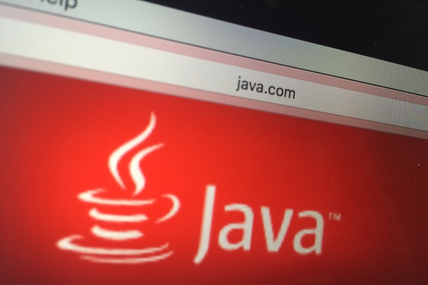

Expanding possibilities for using conventional programming languages on the Web, the DoppioJVM project brings JVM programs to the browser.
Still just a beta-quality research project, open source DoppioJVM leverages the Doppio JavaScript runtime to run unmodified JVM programs in the browser, hooking up with Java APIs that interact with OS resources, said developer John Vilk, a student at the University of Massachusetts.
[ The art of programming is changing rapidly. We help you navigate what's hot in programming and what's going cold and give insights into the technologies that are changing how developers work. | Keep up with hot topics in programming with InfoWorld's Application Development newsletter. ] Both Doppio and DoppioJVM were written in TypeScript, which compiles to JavaScript. "Our ambitions [for Doppio] are to make it easier for developers to re-use existing programs and code written in conventional programming languages on the Web," Vilk noted.
Programs written in conventional programming languages, such as C++ and Java, expect a traditional operating system environment. To that end, Doppio emulates OS services like blocking I/IO and a file system in JavaScript on top of existing browser APIs. Doppio's file system, a standalone library called BrowserFS, emulates the Node.js file system API and ships as a standalone library.
DoppioJVM is Java 8-compatible and leverages an unmodified version of the Java 8 OpenJDK Java Class Library for compatibility with a range of software.
For now, DoppioJVM is hard to integrate into Web pages because the focus has been more on compatibility than usability, said Vilk. "It needs more documentation and an integration guide before it's ready for 1.0. At the moment, you need to build it from source if you want to use it."
Vilk also noted that while DoppioJVM has excellent compatibility, it could be much faster. It can execute programs written in most JVM languages, including Java, Clojure, Scala, JRuby, and Jython, since it can run those languages out of their JAR files. It requires no plug-ins and is compatible with unmodified JVM programs, but it has been is slower than a native JVM. The technology has served as the default JVM for JavaPoly.js, a library that polyfills native JVM support in the browser.